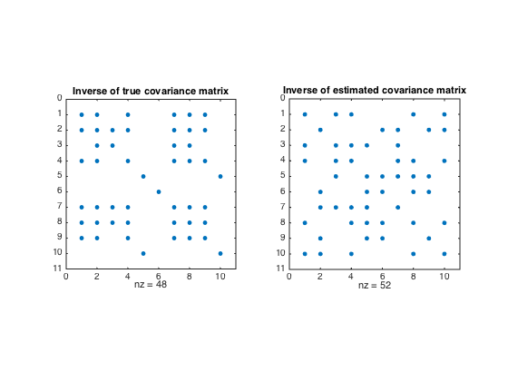

% Joëlle Skaf - 04/24/08 % (a figure is generated) % % Suppose y \in\reals^n is a Gaussian random variable with zero mean and % covariance matrix R = \Expect(yy^T), with sparse inverse S = R^{-1} % (S_ij = 0 means that y_i and y_j are conditionally independent). % We want to estimate the covariance matrix R based on N independent % samples y1,...,yN drawn from the distribution, and using prior knowledge % that S is sparse % A good heuristic for estimating R is to solve the problem % maximize logdet(S) - tr(SY) % subject to sum(sum(abs(S))) <= alpha % S >= 0 % where Y is the sample covariance of y1,...,yN, and alpha is a sparsity % parameter to be chosen or tuned. % Input data rand('state',0); randn('state',0); n = 10; N = 100; Strue = sprandsym(n,0.5,0.01,1); R = inv(full(Strue)); y_sample = sqrtm(R)*randn(n,N); Y = cov(y_sample'); alpha = 50; % Computing sparse estimate of R^{-1} cvx_begin sdp variable S(n,n) symmetric maximize log_det(S) - trace(S*Y) sum(sum(abs(S))) <= alpha S >= 0 cvx_end R_hat = inv(S); S(find(S<1e-4)) = 0; figure; subplot(121); spy(Strue); title('Inverse of true covariance matrix') subplot(122); spy(S) title('Inverse of estimated covariance matrix')
Successive approximation method to be employed. For improved efficiency, SDPT3 is solving the dual problem. SDPT3 will be called several times to refine the solution. Original size: 503 variables, 223 equality constraints 1 exponentials add 8 variables, 5 equality constraints ----------------------------------------------------------------- Cones | Errors | Mov/Act | Centering Exp cone Poly cone | Status --------+---------------------------------+--------- 1/ 1 | 3.471e+00 6.978e-01 0.000e+00 | Solved 1/ 1 | 3.433e-01 7.438e-03 0.000e+00 | Solved 1/ 1 | 4.190e-03 1.097e-06 0.000e+00 | Solved 0/ 0 | 0.000e+00 0.000e+00 0.000e+00 | Solved ----------------------------------------------------------------- Status: Solved Optimal value (cvx_optval): -31.2401
